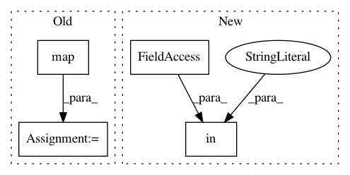

ebd86fede5132c46e10da4e27f3aa0e4ed34571e,eat/io/uvfits.py,,get_df_from_uvfit,#Any#Any#Any#Any#Any#Any#Any#Any#Any#,187
Before Change
except AttributeError:
df["baseline"] = list(map(lambda x: stations_2lett_1lett[x[0]]+stations_2lett_1lett[x[1]],zip(df["t1"],df["t2"])))
is_alphabetic = list(map(lambda x: float(x== "".join(sorted([x[0],x[1]]))),df["baseline"]))
df["baseline"] = list(map(lambda x: "".join(sorted([x[0],x[1]])),df["baseline"]))
df["amp"] = list(map(np.abs,df["vis"]))
df["snr"] = df["amp"]/df["sigma"]
//conjugate phase if baseline letters order has been reversed to make it alphabetic
After Change
//is_alphabetic = list(map(lambda x: float(x== "".join(sorted([x[0],x[1]]))),df["baseline"]))
//df["baseline"] = list(map(lambda x: "".join(sorted([x[0],x[1]])),df["baseline"]))
if "vis" in df.columns:
df["amp"] = list(map(np.abs,df["vis"]))
df["snr"] = df["amp"]/df["sigma"]
df["phase"] = np.angle(df["vis"])*180./np.pi
In pattern: SUPERPATTERN
Frequency: 3
Non-data size: 4
Instances
Project Name: sao-eht/eat
Commit Name: ebd86fede5132c46e10da4e27f3aa0e4ed34571e
Time: 2018-09-25
Author: maciek.wielgus@gmail.com
File Name: eat/io/uvfits.py
Class Name:
Method Name: get_df_from_uvfit
Project Name: ilastik/ilastik
Commit Name: f5c862befe8ddb98c49291c470b110fbc48cc70e
Time: 2015-07-26
Author: bergs@janelia.hhmi.org
File Name: ilastik/applets/dataSelection/dataSelectionApplet.py
Class Name: DataSelectionApplet
Method Name: configure_operator_with_parsed_args
Project Name: ilastik/ilastik
Commit Name: 8d0b85afa8bf042a0cdb62dc217a72894148289f
Time: 2015-07-29
Author: bergs@janelia.hhmi.org
File Name: ilastik/applets/dataSelection/dataSelectionApplet.py
Class Name: DataSelectionApplet
Method Name: configure_operator_with_parsed_args